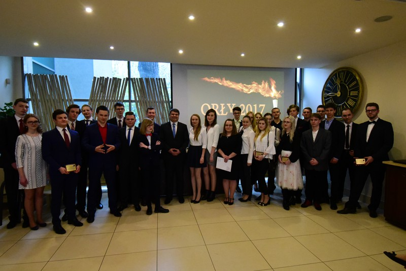

Gazeta ZSO nr II w Opolu
Numer 4/2017
Nasi olimpijczycy

Uczniowie PLO nr II w Opolu mają możliwość uczestniczenia w wielu olimpiadach i konkursach odpowiadających naszym zainteresowaniom. Konkursów jest wiele, bo aż 38 i cieszą się one dużą popularnością. Tegoroczni uczestnicy niezwykle się postarali i zajęli wysokie miejsca na szczeblu krajowym. Można powiedzieć, że „pozamiatali” konkurencję w wielu zawodach. Przykładem może być chociażby Tomek Żelezik, który w Olimpiadzie Wiedzy o Prawie i Państwie zajął pierwsze miejsce w Polsce oraz drugie miejsce w Olimpiadzie Historycznej.
Każdy znajdzie coś dla siebie
Do wzięcia udziału w konkursach zachęcają też profity związane z uzyskaniem tytułu finalisty lub laureata, np. Olimpiada „Diamentowy Indeks AGH” zapewnia laureatom miejsce na uczelni bez konieczności rekrutacji. W tym roku taką nagrodę otrzymało dwóch uczniów z naszej szkoły: Krzysztof Guzik i Paweł Sosna.
Paweł Sosna uzyskał 100%punktów w Olimpiadzie „Diamentowy Indeks AGH” w kategorii matematyka, tytuł laureata w zawodach Mała Olimpiada Matematyczna i finalisty w Olimpiadzie Matematycznej.
Musimy też koniecznie wymienić Radka Rogowskiego, który zajmując 7. miejsce w Olimpiadzie Przedsiębiorczości zdobył indeks na SGH, ponadto jest laureatem Olimpiady Przedsiębiorczości i Zarzadzania oraz Olimpiady Wiedzy Ekonomicznej.
Należy także zauważyć, że w tych trudnych zawodach dla licealistów biorą udział również gimnazjaliści, wykraczający swoimi umiejętnościami poza program. Jednym z nich jest Rafał Starypan z trzeciej klasy, który uzyskał tytuł finalisty w Olimpiadzie Geograficznej i Nautologicznej. Margarethe Szczepaniak została finalistką Olimpiady Języka Niemieckiego. Zarówno Rafał , jak i Margarethe swoją wiedzą pokonali niejednego licealistę.
Zaletą tak dużej ilości olimpiad jest to, że każdy znajdzie coś dla siebie, np. uczniowie zainteresowani religią lub zdrowym stylem życia mogą wykazać się swoją wiedzą na konkursach poświęconych tym tematom, a jeśli ktoś interesuje się problemami „czarnego lądu”, może spróbować swoich sił na Misyjnej Olimpiadzie Wiedzy o Afryce.
Humaniści również mają czym się pochwalić. Ci, dla których filozofia nie jest przeżytkiem podjęli wyzwanie i sprawdzili swoje umiejętności w Olimpiadzie Filozoficznej. Aż 4 osoby z klasy o profilu dyplomatycznym uzyskały status finalisty Olimpiady Literatury i Języka Polskiego, która wymaga od uczestników umiejętności kreatywnego myślenia oraz znajomości dzieł wielu światowych twórców.
Trzeba także zauważyć, że nasi nauczyciele na wszelkie możliwe sposoby próbują zachęcić swoich uczniów do udziału w tych zawodach. Organizują zajęcia pozalekcyjne i dają cenne rady.
Nikt nie opisze tego lepiej niż sam uczestnik
- Udział w olimpiadzie mobilizuje i umożliwia samorealizację – mówi Łukasz Olbert, finalista Olimpiady Filozoficznej. Jak twierdzą uczniowie, już pierwsze etapy zawodów są niezwykle ciekawe. Ilona Nowicka, finalistka konkursu z języka polskiego swoją pracę pisemną poświęciła zaufaniu i nieufności wobec słowa. - Przyjemne było zapełnianie kolejnych stron, odkrywanie cytatów i wierszy, które chciałam mieć w swojej pracy. Generalnie tę część wspominam najlepiej. W wielu olimpiadach jest część pisemna. Krzysztof Uchnast, finalista Olimpiady Wiedzy o Polsce i Świecie Współczesnym: To jest bardzo ciekawe wyzwanie, ponieważ zakres materiału jest bardzo duży. Dzięki temu każdy może znaleźć coś dla siebie. Tematem mojej pracy były „Systemy religijne świata”.
Udział w konkursach to nie tylko wytężona praca i spore poświęcenie. - Zdobyłem doświadczenie dotyczące tego typu zawodów, poznałem wspaniałych ludzi, z którymi nawiązałem - mam nadzieję – trwałą znajomość – mówi Aleksander Wyszyński, finalista Olimpiady Historycznej
Lista finalistów i laureatów olimpiad z naszej szkoły w roku 2016/2017
XLIII Olimpiada Historyczna
Tomasz Żelezik
Aleksander Wyszyński
LXVIII Olimpiada Wiedzy o Polsce i Świecie Współczesnym
Krzysztof Uchnast
XIX Olimpiada Wiedzy o Prawie
Tomasz Żelezik
Maciej Pawlak
Adrianna Zwierzwicz
VII Olimpiada Wiedzy o Państwie i Prawie
Tomasz Żelezik
XLIII Olimpiada Geograficzna i Nautologiczna
Rafał Starypan
XV Misyjna Olimpiada Wiedzy o Afryce
Fabian Eszik
XXIV Olimpiada Teologii Katolickiej
Tomasz Kijowski
XLVI Olimpiada Biologiczna
Bartosz Skulimowski
XXI Olimpiada Wiedzy o Żywieniu i Żywności
Anastazja Świstuń
XL Olimpiada Języka Niemieckiego
Anna Herud
Wiktoria Bonk
Monika Pasoń
Paulina Świtała
Katharina Hausler
Denis Gburek
Margarethe Szczepaniak
XXIX Olimpiada Filozoficzna
Aleksandra Seń
Łukasz Olbert
Aleksandra Tuleja
XLVII Olimpiada Literatury i Języka Polskiego
Michał Bryja
Agata Kubec
Ilona Nowicka
Hanna Szarzewicz
Wiktoria Ziegler
XXVIII Olimpiada Artystyczna
Michał Bryja
XII Olimpiada Przedsiębiorczości
Radosław Rogowski
XXX Olimpiada Wiedzy Ekonomicznej
Radosław Rogowski
Bartosz Zawieja
V Olimpiada Przedsiębiorczości i Zarządzania
Radosław Rogowski
VI Olimpiada Medialna
Michał Woś
LXVII Olimpiada Matematyczna
Paweł Sosna
IX Olimpiada o Diamentowy Indeks AGH
Krzysztof Guzik
Paweł Sosna
Autorzy:
Julia Marcinów IH
Szymon KubicaIH
ul. Pułaskiego 3
45-048 Opole
tel. 077 45 422 86
fax 077 02 18 87
e-mail:
bez.tytulu@o2.pl
Ola Orłowska
DTP
Michał Woś
Opiekun
mgr Lucyna Rudnik
Ola Orłowska, Ania Cichy, Dagmara Cioska, Julia Nowicka, Julia Marcinów, Hania Szarzewicz, Michał Woś, Bartek Lipnicki, Jonasz Mularz, Paweł Kubacki, Mateusz Pietruszyński, Mateusz Orlik